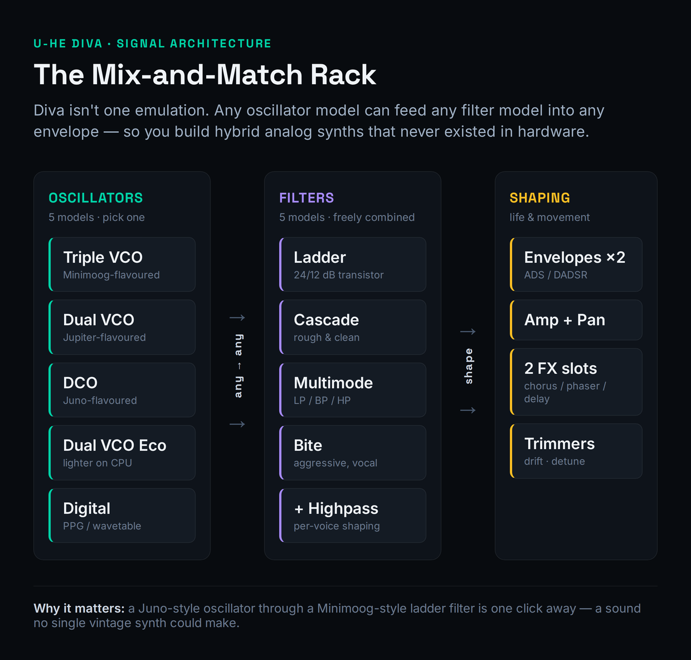
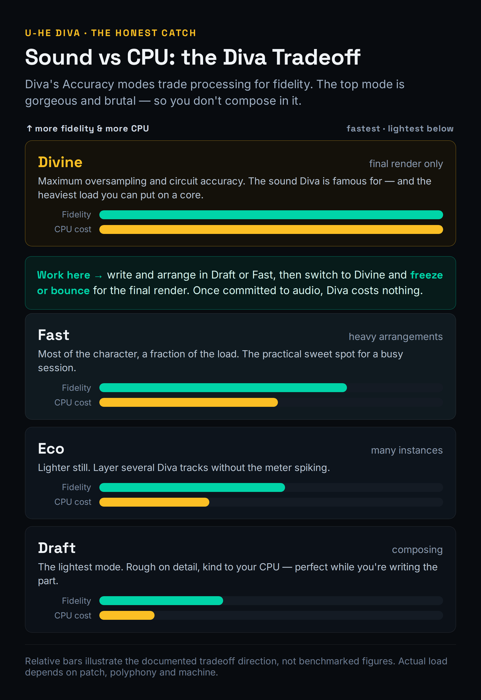
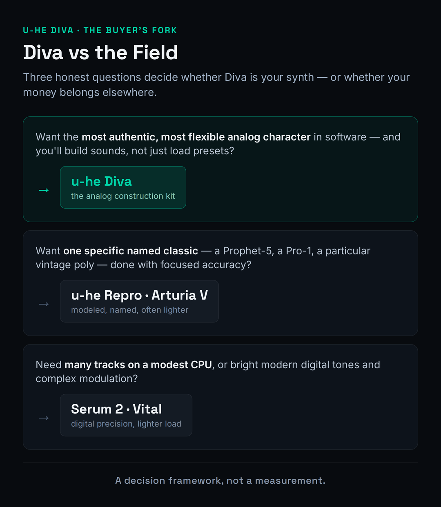

Search "best analog VST" and you will drown in a decade of enthusiast posts swearing that u-he Diva is the closest software has ever come to a real Minimoog, a Juno, a Jupiter. They are not wrong. But they almost never answer the only two questions a 2026 buyer actually has: do I need circuit-modeled analog at all, and can my CPU afford it? Diva is, by a wide margin, the most authentic analog sound you can buy as a plugin. It is also the heaviest mainstream synth on your processor, and that bill is the honest catch nobody puts on the price tag. This review treats Diva as a decision, not a love letter — what the warmth buys you, exactly when a lighter synth is the smarter pick, and how to manage the CPU instead of being ambushed by it.
Diva is an analog-modeling synthesizer built on real-time circuit simulation and zero-delay-feedback filters — the first native softsynth to run industrial circuit-simulation methods live, and the reason its oscillators and filters behave with a "wrongness" that reads as real hardware. The sound is the best in its class for bass, leads and pads, and the mix-and-match rack lets you build hybrids that never existed in hardware. The catch is CPU: in its top "Divine" quality mode Diva is genuinely brutal on a processor, and a busy session of instances will make a modest laptop beg for mercy. Buy Diva if you want the most authentic analog character in software and you will either freeze/bounce or run a capable CPU. If you live on huge track counts on a thin laptop, or you mostly tweak presets, a lighter virtual-analog or a wavetable synth like Serum 2 or Vital is the wiser buy.
The Verdict
The most authentic analog sound in software — oscillators and filters that move and misbehave like real circuits, in a rack you can recombine endlessly. Held off a 9 by one honest thing: the CPU cost is real, and on a modest machine it shapes how you have to work.
| Analog authenticity / character | 9.5 | |
| Filter quality (ZDF resonance) | 9.4 | |
| Modular flexibility (the rack) | 9.0 | |
| Preset library / starting points | 8.6 | |
| Ease of use | 8.7 | |
| CPU efficiency / cost-to-use | 6.4 | |
| Value (price vs the field) | 8.9 |
Scored on u-he's published specifications, the Diva 1.4.8 manual, and the consensus of a decade of hands-on reviews and long-term users — not a first-party bench test of CPU on a stated machine. Every CPU and sonic claim here is framed as judgment from documented behaviour, not a meter reading we took. When we run Diva through our own controlled load test, this section will carry the real numbers. Price and version verified against u-he.com and Plugin Boutique on June 22, 2026.
What Diva Actually Is (and Why It Sounds Different)
Diva stands, with u-he's usual dry humour, for "Dinosaur Impersonating Virtual Analogue." The name is the whole pitch: it impersonates the great monophonic and polyphonic synths of the 1970s and 80s — Minimoog, Juno, Jupiter, and the rest — by modeling their oscillators, filters and envelopes rather than sampling them. That distinction matters more than it sounds. A sampled analog synth captures how a circuit behaved at one moment; a modeled one re-runs the circuit every time you play, so it drifts, reacts and misbehaves the way the hardware did. If you are still building your mental model of how any of this works, our primer on what a synthesizer actually is is the right place to start before you spend a cent.
What sets Diva apart from the dozens of other "analog" plugins is the depth of the modeling. It was the first native software synth to apply methods borrowed from industrial circuit simulators — the kind of SPICE-style analysis chip designers use — in real time, as you play. The headline beneficiary is the filter section, which combines that circuit simulation with zero-delay-feedback (ZDF) design. In plain terms: when you model an analog filter naively, tiny processing delays smear the resonance and rob it of bite. ZDF removes those delays, so Diva's filters resonate, scream and self-oscillate with the immediacy of the real thing. That is the single technical fact that explains most of why Diva sounds "right" where lesser emulations sound like a photograph of a synth.
It helps to understand why Diva, specifically, became the reference. When it launched in 2011 it was a genuine technical leap: most "analog" plugins of the era were either samples or simplified models that captured the broad shape of a synth without its behaviour. Diva modeled the behaviour — the way a filter's resonance interacts with the oscillator, the way components drift, the way the whole circuit responds as a system rather than a set of independent knobs. Producers heard the difference immediately, and fifteen years of competing releases have not dethroned it. That longevity is the strongest endorsement a synth can have in a market that replaces its flagships almost yearly: people who bought Diva in 2012 still reach for it in 2026, and a perpetual license means they paid once.
None of that is free, and u-he has never pretended otherwise. Their own product page says it plainly: the authenticity "comes at the cost of quite a high CPU-hit, but we think it was worth it." Hold onto that sentence — it is the entire review in miniature. Diva is not a clever shortcut to an analog flavour; it is an expensive, accurate simulation that asks your processor to do real work for a real payoff. Whether that trade is worth it to you is the question the rest of this review exists to answer.
The Sound: Where Diva Earns Its Reputation
Strip away the technology talk and the only thing that matters is whether it sounds good. Diva sounds extraordinary. Bass is the most immediate proof: a simple sawtooth through the Ladder filter has a weight and a slightly unstable edge that thin digital synths can only fake. Notes do not sit perfectly in tune the way a wavetable oscillator does — they breathe and drift by tiny amounts, and that imperfection is exactly what your ear reads as "analog." For synthwave bass, techno stabs and house plucks, Diva is close to a cheat code; it sounds finished before you have done anything to it.
Leads and pads are where the filter character pays its rent. Push the resonance on a Diva filter and it does not just get brighter and louder the way a clinical digital filter does — it develops the squelch, the bark and the self-oscillating whistle of real hardware, and it interacts with the oscillator level in the slightly unpredictable way analog circuits do. Run a slow pad through it with some movement on the cutoff and the result has a three-dimensional, living quality that is genuinely hard to get elsewhere. This is the sound producers buy Diva for, and a decade of consensus says it delivers.
It is worth naming the signature sounds, because they are why producers keep Diva on the first insert slot. The Juno-style poly through Diva's modeled chorus is a genre in itself — that wide, slightly seasick shimmer behind a thousand synthwave and dream-pop records. The Moog-flavoured Triple VCO into the Ladder filter is the definitive analog bass: round, authoritative, with a low end that translates on real speakers. Push the Bite filter and you get the screaming acid line; soften the DCO and you get the crisp, chime-like Juno bell. These are not presets you have to fight into shape — they fall out of the synth almost by accident, which is the truest test of a good instrument. If you make EDM or any retro-leaning electronic style, half your sound design problems are already solved the moment you load Diva.
It is worth being honest about what Diva does not do well, because the buy decision depends on it. Diva is an analog instrument, so it excels at analog jobs: warm, organic, characterful, slightly dirty. It is not the synth you reach for when you want surgical, modern, hyper-clean digital tones — screaming EDM leads, glassy future-bass chords, complex evolving textures. For those, a wavetable or spectral synth runs circles around it, which is why most serious producers own both kinds. If you are weighing wavetable precision against analog character, our Serum 2 vs Vital comparison maps that wallet, and our sound-design plugin roundup shows where Diva sits in a fuller arsenal. Diva is a specialist, and it is the best in the world at its specialty.
The Modular Rack: Mix-and-Match Oscillators & Filters
Here is the feature that turns Diva from a great emulation into something no piece of hardware ever was. Diva is built as a rack of swappable modules, and you are not locked into any one synth's signal path. You choose one of five oscillator models, route it into any of five filter models, then into any of several envelope and amplifier models — freely, in any combination. You can put a Minimoog-flavoured oscillator through a Juno-style filter through a different synth's envelope shape, and build a hybrid that never physically existed.

The five oscillator models each carry the character of a different classic. Triple VCO is the largest and most Moog-like, with three oscillators and continuously variable waveshapes. Dual VCO leans Jupiter; DCO is the single, Juno-flavoured multi-wave oscillator that summons that crisp, slightly digital edge; Dual VCO Eco is a deliberately lighter, more CPU-friendly pair; and Digital broadens the palette with grittier, more modern waveforms like Multisaw. The five filters — Ladder, Cascade, Multimode, Bite and the rest — each model a specific hardware character, from the warm 24dB ladder to cleaner and nastier alternatives, with highpass models you can place before or after the main filter.
The filters deserve a closer look, because swapping between them is the fastest way to transform a patch. Ladder is the classic 24dB Moog-style lowpass — warm, round, the default for fat bass and creamy leads, switchable to a brighter 12dB slope. Cascade is related but cleaner, with a rough/clean switch that changes both tone and resonance character. Multimode opens up highpass, bandpass and multiple lowpass slopes, which is where you go for thinner, more surgical tones. Bite is the aggressive one, with the squelch and grit that acid and harder techno lines live on. Because the rack lets you send any oscillator into any of these, the practical workflow is to lock in an oscillator you like and then audition all five filters before touching anything else — the filter is doing more of the character work than almost any other control on the synth.
The practical upshot is that Diva is one of the most rewarding synths to actually learn. If you understand subtractive synthesis, the rack is a playground; if you do not yet, it is the best teacher you could ask for, because every module is a real, recognisable building block. Our guide to sound-design basics pairs naturally with it, and if you want a quick map of which engine suits which job, the free synthesis type selector tool will point you. The flip side: if you only ever load presets, you are paying for a depth you will never touch — which is a real argument for a simpler synth, and we will return to it.
The "Life" Details: Trimmers & Modifications
What separates a convincing analog model from a sterile one is imperfection, and Diva ships two panels dedicated entirely to it. The Trimmers page is where Diva hides its analog "life": voice-to-voice drift, oscillator detune, and per-voice random offsets that mean no two notes are ever quite identical. On a real polysynth, each voice card was a slightly different physical circuit, so a held chord shimmered with tiny tuning and timbral differences. Diva recreates that on purpose. Dial the drift up and a pad becomes warmer and more human; dial it to zero and the same patch sounds tighter and more digital. It is a small control with an outsized effect on whether a sound reads as "real."
The Modifications panel is the other half of Diva's character toolkit, and it is closer to a hidden modular system. It gives you mod processors — Rectify, Quantize, Multiply, Invert and Lag — that you apply to modulation sources before they reach their destinations, plus modulation routings that are not exposed in the main panels at all, like modulating filter resonance or feedback. This is where Diva stops being a pretty emulation and becomes a genuine sound-design instrument: you can build evolving, self-modulating patches that have nothing to do with any single classic synth. It is also where the synthesis-literate user pulls away from the preset-tweaker, because none of it is obvious from the front panel.
The envelopes are part of this character too, and they are easy to overlook. Diva models the way real analog envelopes are not perfectly linear — the attack and decay curves have a shape that contributes to the "snap" of a pluck or the slow swell of a pad in ways a textbook ADSR does not. If you are still building intuition for how attack, decay, sustain and release shape a sound, our free ADSR visualizer is a good companion while you experiment, and Diva is a forgiving place to hear those curves in a musical context. In a real arrangement, Diva rewards layering: a Diva bass under a cleaner digital sub, or a Diva pad behind a brighter wavetable lead, gets you analog weight without asking the analog synth to do every job. That hybrid approach — covered in our EDM plugin guide — is how most producers actually use Diva day to day.
Add the two stereo effects slots — three flavours of analog chorus, two phasers, plate reverb, stereo delay and a rotary-speaker emulation — and a host-syncable arpeggiator, and Diva is a complete instrument rather than a bare oscillator-filter pair. The effects are modeled with the same care as the synth engine, so the chorus in particular is a big part of that lush, vintage-poly sound; you do not need to reach outside the plugin to get a finished patch.
The Honest Catch: CPU — and How to Manage It
Now the part the listicles skip. Diva is the heaviest mainstream software synth most producers will ever load, and it is heavy by design, not by sloppiness. Accurate circuit simulation is genuinely expensive to compute, and Diva spends that cost to buy its authenticity. On a modern multi-core machine a few instances are fine; stack a dozen polyphonic Diva patches in their top quality mode and you will watch a laptop's CPU meter climb toward the ceiling. This is the single most-cited drawback across every honest review for a decade, and pretending otherwise would be doing you a disservice. It is why this review scores CPU a deliberate 6.4 while the sound scores in the mid-nines — the gap between those two numbers is the Diva experience.
The good news is that the cost is controllable once you understand the lever. Diva's Accuracy setting — the quality modes Draft, Eco, Fast and Divine — trades CPU directly for fidelity. Draft is light enough to play dozens of voices while you write; Divine is the gorgeous, brutal top setting you switch to only when you bounce. The professional workflow is simple and it makes the CPU problem largely disappear: compose and arrange in Draft or Fast, where the synth is responsive and you can run many instances, then switch the finished patches to Divine and freeze or bounce them to audio one at a time. Once a track is committed to audio, Diva costs your processor nothing.

It is worth understanding what actually drives the cost, because it tells you where to spend your CPU budget. Diva's load multiplies along three axes at once: the number of voices sounding, the complexity of the chosen oscillator (the Triple VCO is far heavier than the Eco model), and the Accuracy mode. A single mono bass in Fast mode is nothing; a sixteen-voice pad on the Triple VCO in Divine is the worst case, because every voice is a full circuit simulation running in parallel. Diva does spread that work across CPU cores well, so a modern multi-core machine handles it far better than the decade-old laptops that earned Diva its "CPU monster" reputation — an M-series Mac or a recent Ryzen will run several Divine instances without complaint. The reputation is real, but it is also partly a relic of 2013 hardware.
Two more levers help. Polyphony: drop the voice count on pad and bass patches that never play more than a few notes at once, since every extra voice is a full circuit simulation running in parallel. And oscillator choice: the Dual VCO Eco model exists precisely to be lighter, and writing with it before committing to a heavier oscillator can keep a busy session playable. If you produce EDM or future bass with dense synth stacks, building this freeze-and-bounce discipline into your template is the difference between Diva being a joy and being a liability. The honest summary: Diva's CPU appetite is real, but it is a workflow problem with a known workflow solution — not a reason to avoid the synth if its sound is what you want.
Diva vs Repro vs Arturia vs Digital (Serum & Vital)
The most useful thing a review can do is tell you when not to buy the thing it is reviewing. Diva is the best general analog-character engine in software, but it is not always the right tool, and three alternatives draw the lines cleanly.

If you want a specific named classic rather than a flexible analog canvas, Diva is arguably overkill. u-he's own Repro bundle models the Sequential Pro-1 and Prophet-5 with component-level accuracy and a fraction of the menu-diving; if "I want a Prophet" is the whole brief, Repro or a focused emulation from Arturia's V Collection gets you there faster and often lighter. Diva's advantage is breadth — it is five synths you can recombine, not one synth done perfectly — so the question is whether you want a versatile analog instrument or a faithful single recreation.
If your real need is modern digital precision, complex modulation, or simply many tracks on a modest CPU, the wavetable synths win outright. Serum 2 and Vital are dramatically lighter, do wavetables, FM and granular work Diva cannot, and give you the clinical, aggressive tones that analog modeling is the wrong tool for. Massive and Arturia Pigments sit in similar territory, and Omnisphere covers the everything-workstation role. The honest framing: Diva and a good wavetable synth are not competitors so much as the two halves of a complete rig — one for character, one for precision. Our best synth plugins guide lays out the full field, and there is no shame in owning more than one of these. They do different jobs.
There is a third comparison worth making, because it is the one most analog buyers actually face: Diva versus a lighter, dedicated single-synth emulation. Tools like TAL-U-NO-LX (a focused Juno) or GForce's instruments do one classic beautifully, at a fraction of Diva's CPU cost, and for "I only ever want a Juno" they can be the smarter, lighter choice. What you give up is range and depth — those tools are one synth, where Diva is five engines you can recombine and a Modifications panel that goes well past any single classic. The honest test is how varied your analog needs are. If you want one specific vintage sound and want it light, a dedicated emulation may beat Diva on your particular machine. If you want a single instrument that covers Moog, Juno, Jupiter and hybrids of all three with the best modeling in the business, Diva is the one to own.
Presets, Workflow & the Small Stuff
Diva ships with more than 1,200 factory presets, and they are genuinely good — characterful basses, lush polys, gritty leads and a strong cross-section of the analog vocabulary. There is also a large and active third-party scene; commercial and free soundsets for Diva are everywhere, because sound designers love working with the engine. If you are the kind of producer who starts from a preset and tweaks, you will never run out of strong starting points, and a quick browse will tell you within minutes whether the Diva sound is your sound. If you want to expand without spending, our roundup of the best free VST plugins and free soundset directories will keep you busy.
A few recent additions are worth knowing about if you play hardware. Diva's 1.4.8 update added MPE support, so expressive controllers like the ROLI Seaboard or a LinnStrument can drive per-note pitch, slide and pressure into Diva's analog engine — a genuinely modern feature on a vintage-modeling synth, and a reason it still feels current. The experimental Key Control option lets you drive the interface from the keyboard for mouseless operation, which sound designers in particular appreciate. And the NKS integration is more than a checkbox: on a Komplete Kontrol keyboard the factory presets map to the hardware controls and light up the key zones, which makes Diva's 1,200 presets far faster to browse than scrolling a list. None of these are headline reasons to buy, but together they signal a synth its developer still actively maintains rather than leaves to coast on reputation.
On daily workflow, Diva is conventional in the best and worst senses. The layout is one panel per section — oscillator, filter, envelopes, effects — with everything visible and nothing buried behind tabs the way modern mega-synths bury it. That makes it fast to read and easy to learn if you know synthesis. It also means the interface looks its age next to flashier 2026 releases, and there is no spectacular visual feedback, no wavetable morphing display, no animated modulation lines. Diva is a workhorse with a clean dashboard, not a spectacle. For most producers that is a feature; if you want eye candy, look elsewhere.
The practical details are all reassuring. Diva runs as VST, VST3, AU, AAX and CLAP, with native Apple Silicon support alongside Intel, on macOS and Windows, plus a Linux build that u-he still labels beta. It is NKS-ready for Komplete Kontrol and Maschine hardware. The license is perpetual with free updates, there is no subscription, and there is no iLok dongle to carry around — u-he uses a simple serial system. The current build at the time of writing is 1.4.8, which added MPE support and an experimental mouseless "Key Control" option. For layering Diva with other instruments in a track, our guide to layering synths and the synthesis parameter reference are useful companions.
Who Should Buy Diva, and Who Should Skip It
Buy Diva if your music lives on analog character and you build your own sounds. Synthwave, techno, house, ambient, dub and film composers are the core audience — anyone whose bass, leads and pads benefit from warmth, movement and a touch of analog dirt. If you already understand subtractive synthesis, the modular rack and the Modifications panel make Diva one of the most rewarding instruments you can own, and the sound is a reference standard you will keep coming back to for years. At a list price around $179, dropping to roughly half that on the frequent sales, it is a strong-value purchase for that producer.
Skip Diva — or at least wait — if you mostly tweak presets and will never use the depth, because you are paying for an engine you will not touch. Skip it if you live on dense synth arrangements on a modest laptop and have no appetite for freeze-and-bounce discipline; the CPU reality will frustrate you daily. And reach for something else if your palette is fundamentally digital — bright, clean, modern, wavetable-driven — because analog modeling is the wrong tool for that sound no matter how good the modeling is. There is no shame in any of those rows; the most expensive mistake in plugins is buying a specialist for a job a generalist would do.
Is u-he Diva Worth It?
For the producer it is built for — someone chasing authentic analog character who builds sounds and will work around the CPU — Diva is comfortably worth it, and it has been worth it for over a decade, which is its own kind of recommendation in a market that churns synths yearly. It is the most authentic analog sound you can buy in software, the rack makes it endlessly deep, and the perpetual, dongle-free license at frequent half-price sales is honest value. For that person this is an easy 8.8 and an easy buy.
For everyone else, the answer hinges on the two honest catches this review keeps returning to. If your CPU is modest and your sessions are dense, Diva will ask you to change how you work; if you are willing, the freeze-and-bounce workflow makes the cost disappear, and if you are not, a lighter synth will make you happier. If your music is digital rather than analog, Diva is simply the wrong specialist however brilliant it is. The plugin earns its score on sound alone; whether it earns your money depends entirely on whether its specialty is your sound and whether you will pay its CPU bill. Try the demo on your own track, in Divine mode, and let your ears and your CPU meter decide together.
Try It Yourself: 3 Diva Exercises
These work in the Diva demo, or in any analog-style synth you already own — the skill matters more than the brand.
- Load a simple sawtooth pad on the Triple VCO oscillator and play a sustained chord.
- Open the Trimmers page and slowly raise the voice drift and detune while the chord holds. Listen for the moment the sound stops feeling static and starts to shimmer and breathe.
- Now pull drift back to zero. Hear how much tighter — and more digital — the same chord becomes. That movement is what "analog" means to your ear.
- Start from an init patch. Choose the Triple VCO oscillator, then swap the filter to the Ladder model and dial in heavy resonance until it nearly self-oscillates.
- Now swap only the filter to a different model — Cascade, then Bite — without changing anything else. Play the same riff each time and note how completely the character changes.
- Pick the pairing that no single hardware synth could have given you. That is the point of the rack: you are building an instrument, not loading one.
- Load one demanding Diva pad in Divine mode and watch your DAW's CPU meter while you hold a full chord. Note the figure.
- Switch the Accuracy to Draft and play the same chord. Note how far the meter drops — that gap is the price of the top quality mode.
- Freeze or bounce the Divine-mode patch to audio, then run the rendered file through our free Mix Fingerprint tool to confirm the committed sound is what you wanted. Now the patch costs your CPU nothing, and you have the full-fidelity render.
Frequently Asked Questions
Yes, but with context. Accurate circuit simulation is genuinely expensive, and in its top "Divine" quality mode Diva is one of the heaviest mainstream softsynths you can load — a stack of polyphonic instances will tax a modest laptop. That said, the reputation dates partly from 2013-era hardware; a modern multi-core machine (an M-series Mac or a recent Ryzen) runs several Divine instances comfortably. The fix is workflow: write in Draft or Fast mode, then switch to Divine and freeze or bounce for the final render. Once committed to audio, Diva costs your CPU nothing.
It can be, with a caveat. The interface is clean and conventional — one panel per section, nothing buried — which makes it a good synth to learn subtractive synthesis on, since every module is a real, recognisable building block. But its depth (the modular rack, the Modifications panel) is wasted if you only load presets, and a beginner who mostly tweaks presets is paying for power they will not use. If you want to genuinely learn synthesis, Diva is an excellent teacher. If you just want quick sounds, a simpler synth or a free option may suit you better at first.
They do opposite jobs, and many producers own both. Diva is an analog-modeling synth: warm, organic, characterful, best for vintage-flavoured bass, leads and pads — but CPU-heavy. Serum 2 is a wavetable synth: clean, modern, precise, far lighter on CPU, and the right tool for bright digital tones, complex modulation and aggressive EDM leads. Buy Diva for analog character; buy Serum for digital precision. If you can only afford one and your music is modern and digital, Serum is the more versatile starting point; if it is retro and analog, Diva is irreplaceable.
Yes. Diva runs natively on Apple Silicon (M1 and newer) as well as Intel Macs, so you get full performance without Rosetta translation — which matters for a CPU-hungry synth. It is available as VST, VST3, AU, AAX and CLAP on macOS and Windows, with a Linux build that u-he still labels beta. Apple Silicon machines in particular handle Diva's load far better than the older hardware that built its "CPU monster" reputation.
Neither. Diva is a perpetual license — you pay once and own it, with free updates and no subscription. There is no iLok dongle; u-he uses a simple serial-based system, so you are not tied to a piece of hardware. List price is around $179 / £139, but Diva goes on sale frequently at 40–50% off, so it is worth waiting for a promo or checking the current price before you buy.
Anything that lives on analog character. Synthwave, techno, house, ambient, dub, lo-fi and film scoring are the sweet spot — warm bass, lush poly pads, gritty leads and acid lines all fall out of Diva almost effortlessly. It is less suited to bright, clinical, modern digital styles (hyperpop, aggressive EDM, complex future bass), where a wavetable synth is the better tool. If your reference tracks sound like vintage hardware, Diva is built for you.
Both are u-he analog synths, but they aim differently. Repro models two specific Sequential classics — the Pro-1 and the Prophet-5 — with component-level accuracy and a focused, faithful feature set. Diva is broader: five oscillator models and five filters from different classics that you freely recombine into hybrids no single hardware synth ever was. If you want one named classic done perfectly, Repro is faster and often lighter. If you want a flexible analog canvas covering many classic sounds, Diva is the one to own. Plenty of producers have both.
Four levers, in order of impact. First, drop the Accuracy mode — write in Draft or Fast and reserve Divine for the final render. Second, freeze or bounce finished Diva tracks to audio; once committed they cost nothing. Third, lower the voice count on patches that never play many notes at once, since every voice is a full circuit simulation. Fourth, use the lighter Dual VCO Eco oscillator while composing. Build the freeze-and-bounce habit into your project template and Diva's CPU appetite stops being a problem.